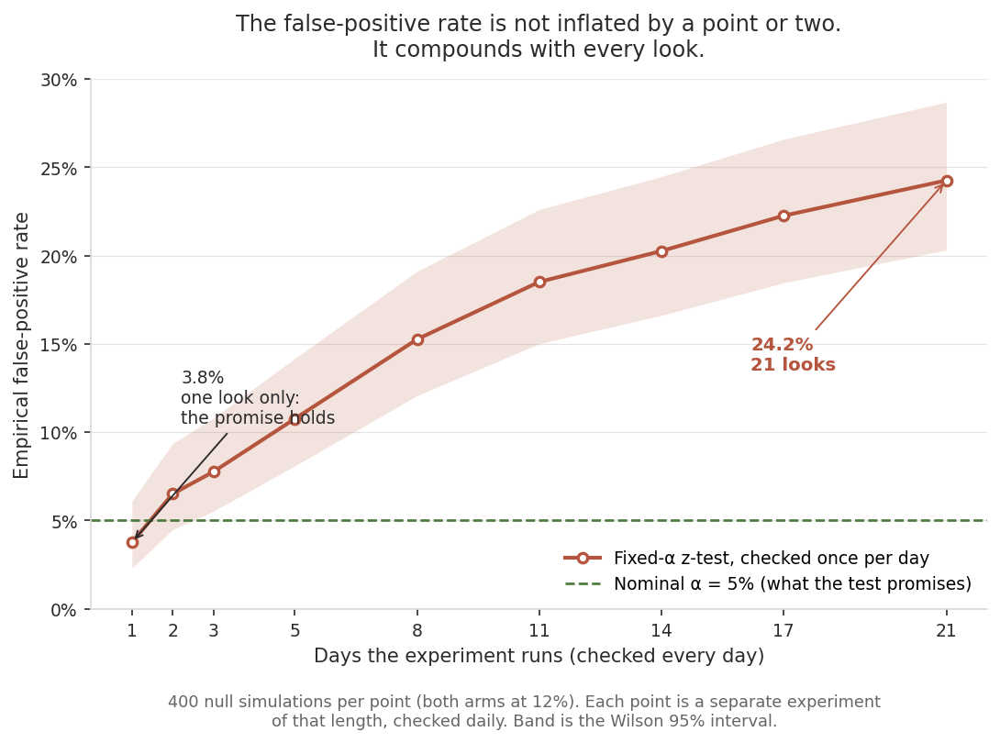
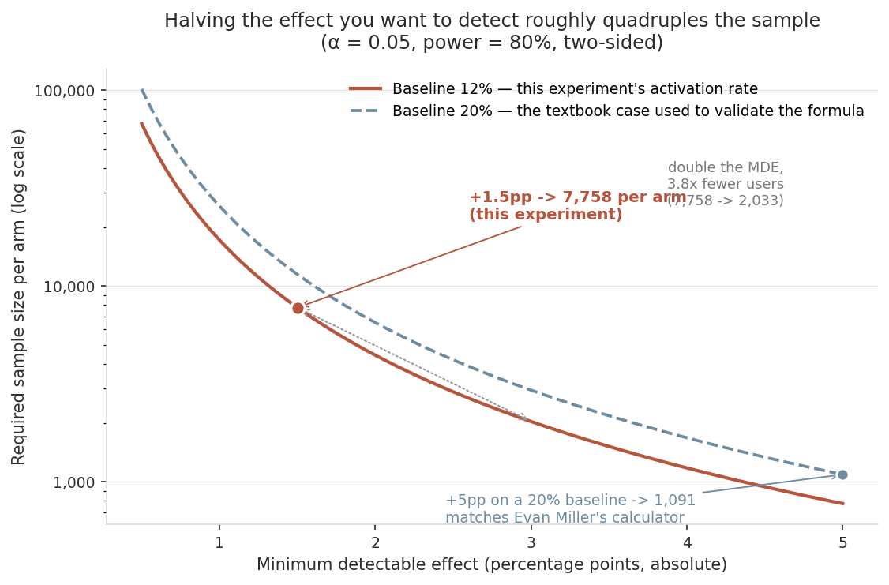
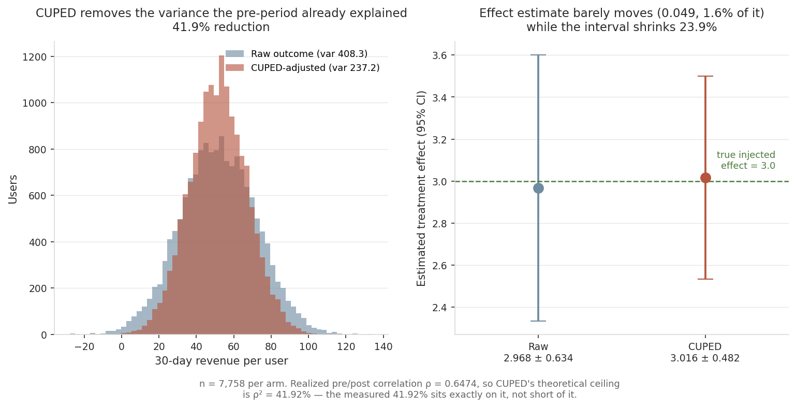
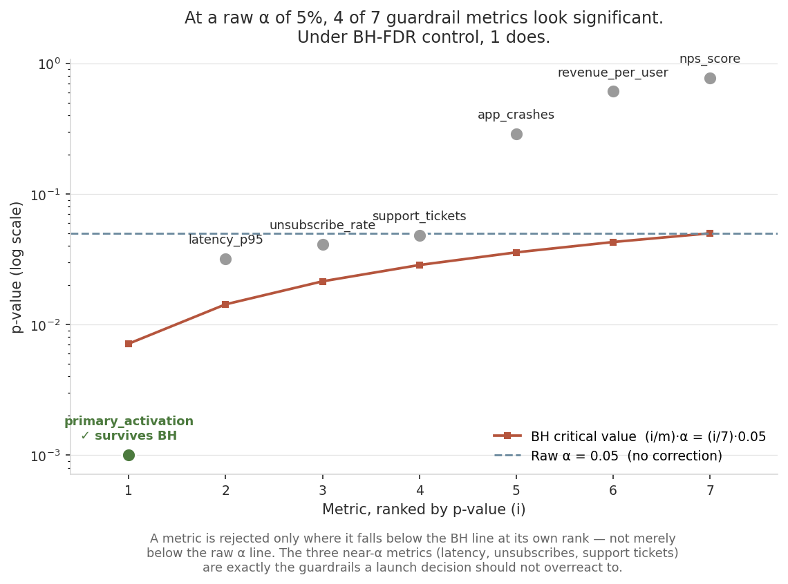
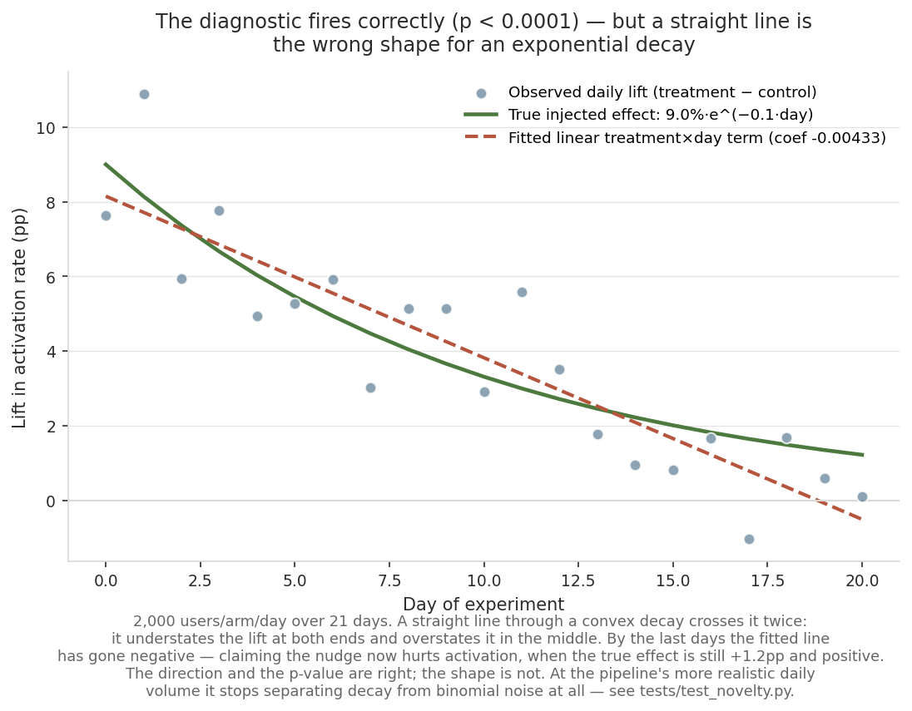
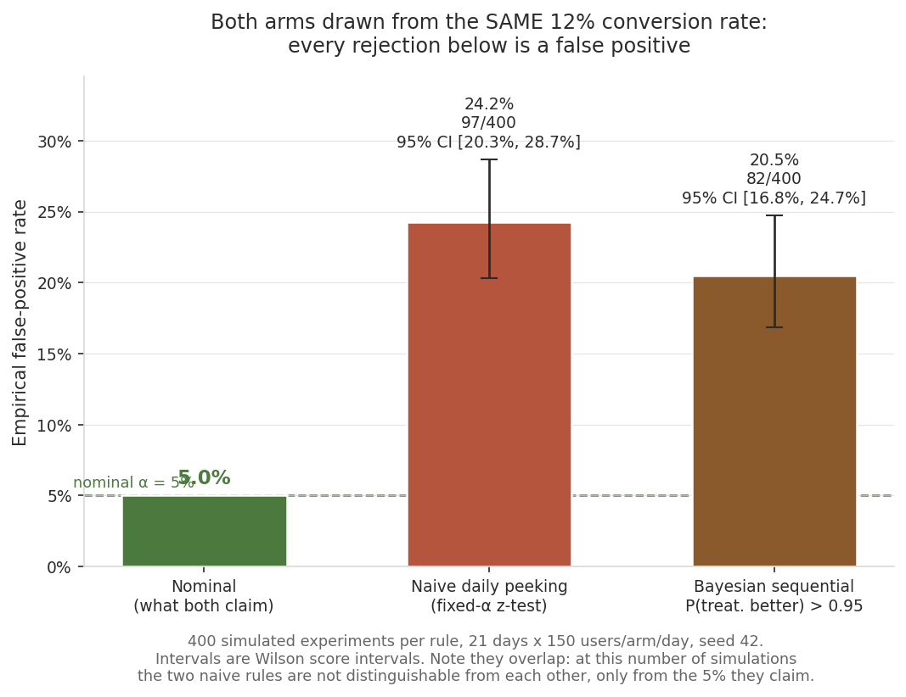

A/B testing done the way a real experimentation platform has to do it: power analysis before launch, Sample Ratio Mismatch (SRM) detection, CUPED variance reduction, multiple-testing correction across guardrail metrics, a novelty-effect check — and, as the centerpiece, an empirical calibration harness that runs each stopping rule thousands of times under a *known* ground truth to check whether it actually controls the error rate it claims to.
This page shows the project's results. The methodology, the design decisions and the limitations are documented in the repository's README.
chile-fintech-experimentation-lab

At a single look the test delivers what it promises (3.8%, consistent with the nominal 5%). The damage is done by the decision to keep looking, and it accumulates with each additional day.
1. Power analysis

Verified against a known textbook case in tests/test_power.py: baseline 20%, MDE +5pp absolute, alpha=0.05, power=0.80 reproduces 1,091 per arm, matching Evan Miller's public A/B testing sample-size calculator for the identical input, hand-checked from the pooled-variance formula. That validation point is the blue marker on the chart.
3. CUPED variance reduction

41.9% variance reduction using a pre-period revenue covariate. The pipeline specifies a correlation of 0.65; the realized correlation in the sample is ρ = 0.6474, so CUPED's theoretical ceiling here is ρ² = 41.92% — and the measured reduction is 41.9168%, sitting exactly on the ceiling rather than short of it. (The reduction CUPED achieves *is* the empirical ρ², which is why the two agree to four decimals. The only gap worth naming is between the realized ρ and the 0.65 specified, which is ordinary sampling error in the correlation itself, not slack in the method.)
4. Multiple-testing correction (BH-FDR) across 7 guardrail metrics

Read at a raw alpha=0.05, 4 of 7 metrics look significant. Under BH-FDR control, only 1 survives. Three of those four (latency, unsubscribe, support tickets) are exactly the guardrail metrics a launch decision should be most cautious about overreacting to — this is what the correction is for.
5. Novelty-effect check

Interaction coefficient -0.00433, p < 0.0001 — correctly detects an injected decaying effect.
6. Calibration: does each stopping rule control what it claims to?

One caveat the figure makes visible and the table does not: the two Wilson intervals overlap ([20.3%, 28.7%] and [16.8%, 24.7%]). At 400 simulations the Bayesian rule is *not* distinguishable from the naive z-test — both are distinguishable from the 5% they claim, which is the finding, but "Bayesian is better than naive" is not something this evidence supports. Separating them would need more simulations.